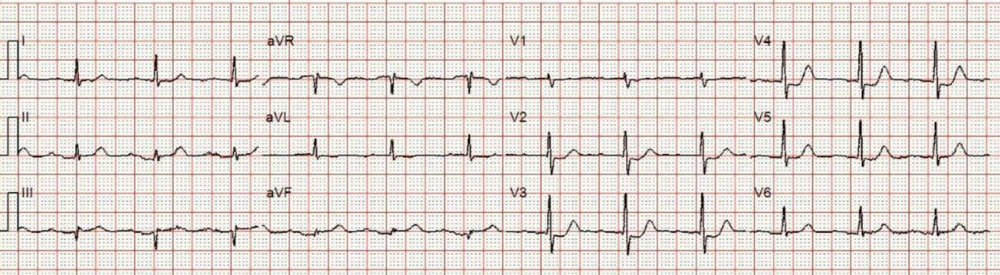
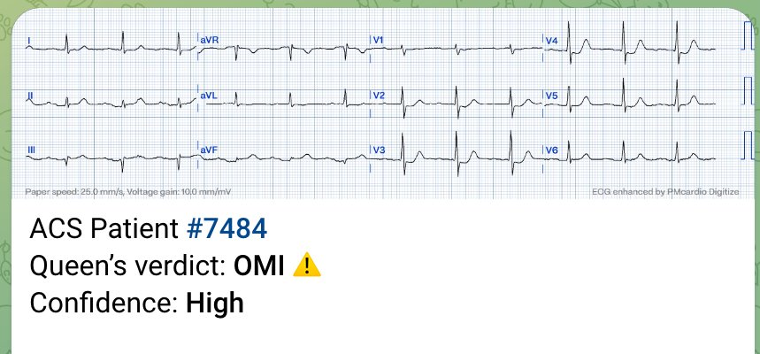
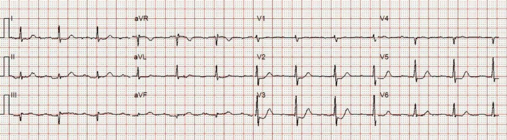
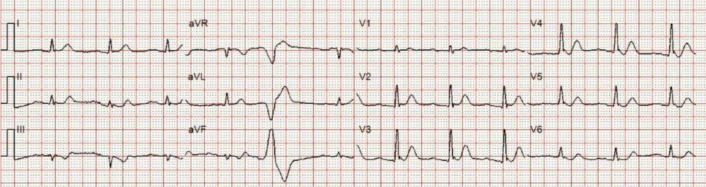
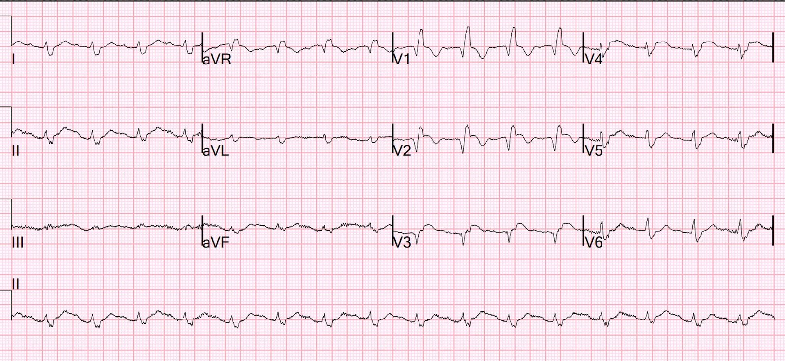
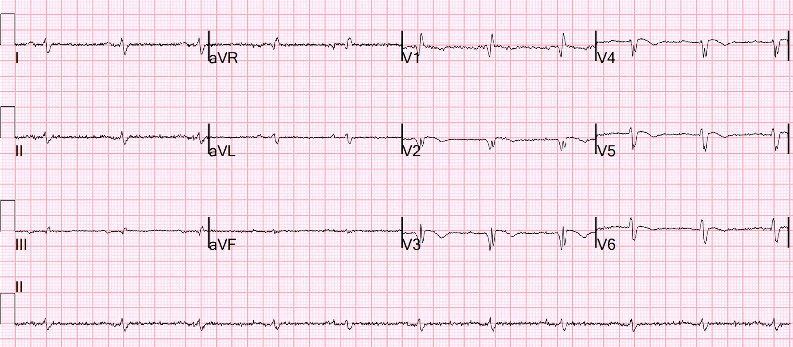
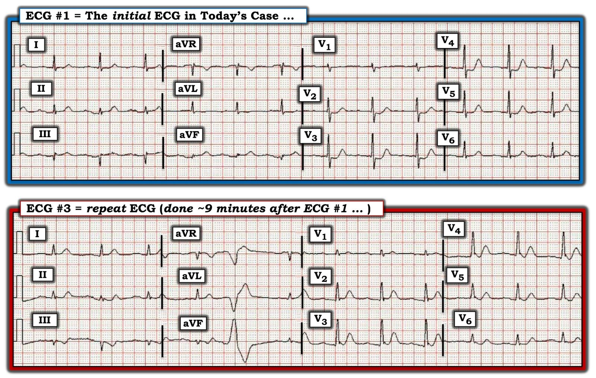

06/10/2023 — Động mạch nào liên quan đến nhồi máu? Điện tâm đồ sau PCI cho thấy gì? Điện tâm đồ giai đoạn hồi phục cho thấy gì?
Bản dịch tiếng Việt của bài "What is the infarct artery? What does the post PCI ECG show? What does the convalescent ECG show?" – Dr. Smith’s ECG Blog. Giữ nguyên toàn bộ 9 hình ảnh của bản gốc.
Động mạch nào liên quan đến nhồi máu?
Tôi thường không đặt câu hỏi này, vì nó hiếm khi liên quan đến quyết định kích hoạt phòng thông tim.
Đây là một ca mà điều đó tạo nên khác biệt: Right Ventricular MI seen on ECG helps Angiographer to find Culprit Lesion (Nhồi máu thất phải thấy trên điện tâm đồ giúp bác sĩ chụp mạch tìm ra tổn thương thủ phạm)
Tuy vậy, đôi khi việc cố gắng dự đoán động mạch liên quan đến nhồi máu cũng là một bài tập học thuật thú vị:
Một bệnh nhân cao tuổi khởi phát đau ngực một giờ trước đó. Ông gọi 911. Đây là điện tâm đồ trước viện.


Bạn nghĩ gì?
Tôi nghĩ nó trông giống OMI thành dưới-sau. Nhân viên cấp cứu ngoài viện cũng nghĩ vậy và đã kích hoạt phòng thông tim (cath lab) ngay từ trước viện.
Queen of Hearts cũng chẩn đoán OMI.


BẠN CŨNG CÓ THỂ SỞ HỮU PM Cardio AI BOT!! (ỨNG DỤNG AI PHÁT HIỆN OMI CỦA PM CARDIO)
Nếu bạn muốn bot này giúp bạn chẩn đoán sớm OMI và cứu bệnh nhân cùng cơ tim của họ, bạn có thể đăng ký để nhận phiên bản beta sớm của bot tại đây. Bot hiện chưa phát hành, nhưng đây là cách để bạn có tên trong danh sách chờ.
https://share-eu1.hsforms.com/18cAH0ZK0RoiVG3RjC5dYdwfyfsg (biểu mẫu đăng ký nhận bản beta của bot)
Ca bệnh tiếp diễn:
Nhân viên cấp cứu ngoài viện ghi thêm một điện tâm đồ 2 phút sau đó:


Điện tâm đồ này được đọc là OMI thành dưới-sau, và tôi nghĩ là đọc đúng.
Ghi chú thêm: có nhiễu ở V4
9 phút sau, bản ghi này được ghi lại:


Bạn nghĩ gì?
Smith: lúc này có sóng T tối cấp ở các chuyển đạo trước tim kèm đoạn khởi đầu ST chênh xuống (sóng T de Winter). ST chênh lên (STE) ở thành dưới đã mất và thực ra còn có ST chênh xuống (STD), nên giờ có vẻ là tắc LAD đoạn gần.
Sóng T de Winter có đoạn ST chênh xuống và sóng T tối cấp dương. Chúng thường khá khác biệt với OMI thành sau, vốn cũng có đoạn ST chênh xuống và có thể có sóng T đảo ngược, hai pha hoặc dương. Vì vậy đôi khi chúng có thể bị nhầm với nhau. Điều này không giải thích được hình ảnh có vẻ là OMI thành dưới, và rốt cuộc điều đó vẫn chưa được giải thích.
Phòng thông tim đã được kích hoạt. Thời gian từ khởi phát đau ngực đến bóng khá ngắn (khoảng 120-150 phút)
Chụp mạch vành:
Tắc 100% LAD đoạn gần
Điện tâm đồ sau PCI:


Bạn nghĩ gì?
–Có RBBB (một dấu hiệu rất xấu).
–Không có sóng r khởi đầu, nên đây là phức bộ qR; như vậy có mất các lực khử cực hướng ra trước của QRS (thêm một dấu hiệu xấu).
–Có sóng QS ở V3 (thêm một dấu hiệu xấu).
–ST chênh lên tồn tại kéo dài ở các chuyển đạo V1-V4, với STE rất nhiều ở V4 (thêm một dấu hiệu xấu).
Tất cả những điều này có vẻ phù hợp với hiện tượng “không tái lưu” (No Reflow), tức là tắc vi mạch kèm thiếu máu cục bộ kéo dài dù động mạch đã được mở thông. Tắc vi mạch được đánh giá bằng mức “ngấm thuốc cơ tim” (blush) trên phim chụp mạch vành, và được hệ thống hóa bằng phân độ tưới máu cơ tim TIMI (TIMI Myocardial Perfusion, TMP). Yếu tố dự báo tốt nhất cho mức ngấm thuốc cơ tim tốt và TMP cao là điện tâm đồ, cụ thể là sự hồi phục của ST chênh lên trên điện tâm đồ. Do đó, điện tâm đồ này dự báo tưới máu cơ tim kém và kết cục xấu.
Để biết thêm nhiều thông tin, hãy đọc bài này:
Poor Microvascular Reperfusion (“No Reflow”): Best Diagnosed by ECG (Tái tưới máu vi mạch kém (“không tái lưu”): chẩn đoán tốt nhất bằng điện tâm đồ)
Siêu âm tim ngày hôm sau:
Phân suất tống máu (EF) 20%
Rối loạn vận động thành khu trú - vách đoạn xa, thành trước và mỏm vô động, vùng rộng
Rối loạn vận động thành khu trú - thành dưới đoạn xa vô động.
Rối loạn vận động thành khu trú - thành trước bên vô động.
Rối loạn vận động thành khu trú - thành trước vô động.
Hình ảnh siêu âm tim kém như vậy có thể gặp ngay cả sau khi tái tưới máu rất tốt, vì cơ tim còn sống có thể bị “choáng” (stunned) và cần vài tuần để hồi phục. Nhưng điện tâm đồ đang cho chúng ta biết rằng cơ tim nhiều khả năng sẽ không hồi phục.
Những ổ nhồi máu lớn như vậy có nhiều biến chứng. Biến chứng của bệnh nhân này gồm sốc tim, nhịp nhanh thất, blốc AV. Ông nằm viện 16 ngày.
Điện tâm đồ một tháng sau:


Bạn nghĩ gì?
Điện tâm đồ này chẩn đoán phình thất trái thành trước khi có RBBB. Khả năng hồi phục sẽ rất ít.
Xem thêm các ca RBBB kèm phình thất trái tại đây. Đây là một dạng phình thất trái đặc biệt khó chẩn đoán trên điện tâm đồ vì RBBB tạo ra một sóng R mà nếu không có RBBB thì đã không xuất hiện.
Siêu âm tim 1 tháng sau:
–Buồng thất trái giãn nhẹ, độ dày thành bình thường và rối loạn chức năng tâm thu thất trái nặng.
–Phân suất tống máu thất trái ước tính là 20 %.
–Rối loạn vận động thành khu trú - vách đoạn giữa và vùng mỏm, thành trước đoạn giữa và vùng mỏm và mỏm thực sự, mỏng đi và loạn động. (Smith: đây chính là định nghĩa của phình thất trái)
–Rối loạn vận động thành khu trú - thành trước bên vùng mỏm và thành dưới vùng mỏm, vô động.
Đáng tiếc, và cũng có thể dự đoán được, hiện ông bị suy tim khá nặng.

===================================
BÌNH LUẬN CỦA TÔI, bởi KEN GRAUER, MD (6/10/2023):
===================================
Chúng tôi đã điểm qua nhiều biến thể của “chủ đề” sóng T deWinter trên Dr. Smith’s ECG Blog (xem Bình luận của tôi ở cuối trang trong bài ngày 17 tháng Tư năm 2023 — chỉ kể ra một bài).
- Điều gây ấn tượng nhất với tôi về thực thể lâm sàng này (vốn báo trước OMI LAD sắp xảy ra và/hoặc đang diễn ra) — là tùy theo một điện tâm đồ được ghi vào lúc nào trong quá trình bệnh — “hình ảnh” điện tâm đồ của sóng T deWinter có thể khác đi theo nhiều cách so với 8 ví dụ điện tâm đồ lâm sàng được trình bày trong bản thảo gốc trên NEJM của deWinter và cs. (Hình 1).
- Ca hôm nay là thêm một ví dụ nữa về một hình ảnh rõ ràng đã tiến triển để trở thành sóng T deWinter — sau khi khởi đầu với biểu hiện OMI dưới-sau cấp trên điện tâm đồ ban đầu.

===================================
Hãy xem lại điện tâm đồ ban đầu — và bản ghi lặp lại 9 phút sau đó (Hình 2):
- Có cách nào nhận ra OMI LAD cấp từ điện tâm đồ ban đầu không?
- Làm thế nào để giải thích hình dạng không điển hình của sóng T deWinter trên bản ghi lặp lại?
- Bạn nghĩ thêm một điện tâm đồ ghi lại nữa có thể đã trông như thế nào — nếu nó được ghi ngay sau điện tâm đồ #3?


OMI thành sau hay sóng T deWinter?
Theo Dr. Smith — đôi khi, ST-T chênh xuống kèm phần cuối sóng T dương của OMI thành sau có thể bị nhầm với sóng T deWinter (và ngược lại). Sự nhầm lẫn này có thể dễ xảy ra hơn ở những ca có LAD “vòng qua mỏm” (wraparound). Dù vậy — tôi hoàn toàn không ngờ khi lần đầu nhìn điện tâm đồ #1 của ca hôm nay rằng bệnh nhân sắp tiến triển thành nhồi máu thành trước diện rộng.
- Điện tâm đồ #1 trong Hình 2 hoàn toàn điển hình cho OMI thành sau cấp vì: i) Có ST chênh xuống dạng bậc thềm (shelf-like) ở các chuyển đạo ngực, tối đa ở V2 đến V4, kèm phần cuối sóng T dương (tức là “nghiệm pháp soi gương (Mirror Test)” dương tính — như đã bàn trong Bình luận của tôi trong bài ngày 21 tháng Chín năm 2022 trên Dr. Smith’s ECG Blog); ii) Có vùng chuyển tiếp sớm — với sóng R chiếm ưu thế ngay từ chuyển đạo V2; và, iii) Có bằng chứng OMI thành dưới đi kèm (tức là sóng Q ở chuyển đạo III, aVF — sóng T tối cấp ở cả 3 chuyển đạo dưới [tương xứng với QRS rất nhỏ ở các chuyển đạo này] — và gợi ý sóng T đảo ngược soi gương nông nhưng có thật ở chuyển đạo aVL).
Hình ảnh điện tâm đồ thay đổi ngoạn mục 9 phút sau đó — với bản ghi lặp lại trong Hình 2:
- Có một PVC tương đối muộn trong chu kỳ trên điện tâm đồ #3.
- ST chênh xuống dạng bậc thềm vốn tối đa ở V2 đến V4 trên điện tâm đồ #1 — nay đã hết. Thay vào đó là các sóng T giờ đây gần như hoàn toàn dương (tối cấp), rõ nhất ở V2 đến V4.
- LƯU Ý #1: Sóng T dương nay bắt đầu ngay từ chuyển đạo V1!
Những nhận xét bổ sung mà tôi thấy thú vị:
- Phức bộ QRS ở chuyển đạo V1 của điện tâm đồ #3 — nay dương ưu thế. Thay đổi này là có thật — được củng cố bởi việc QRS nay gần như dương hoàn toàn ở các chuyển đạo lân cận V2 và V3.
- LƯU Ý #2: Ban đầu tôi đã định quy QRS dương ưu thế mới xuất hiện ở V1,V2,V3 này cho sự tiến triển của OMI thành sau mà tôi nghĩ bệnh nhân đang bị — nhưng xem xét kỹ hơn lại gợi ý một hình ảnh đang tiến triển ngoài dự đoán là sóng T deWinter!
- LƯU Ý #3: Đoạn ST ở chuyển đạo V2 và V3 của điện tâm đồ ghi lại này thực ra chênh lên! Điều này là có thật — thấy rõ qua sự khác biệt so với điện tâm đồ #1, trong đó đoạn ST ở các chuyển đạo này chênh xuống.
- LƯU Ý #4: Xét việc trước đó đã thấy sóng S rõ trên điện tâm đồ #1 — tôi diễn giải khía tinh tế ở cuối QRS tại V2,V3 của điện tâm đồ #3 là phù hợp với T-QRS-D (biến dạng phần cuối QRS – Terminal-QRS–Distortion) — qua đó cung cấp thêm bằng chứng về OMI LAD cấp đang tiến triển.
- LƯU Ý #5: Đoạn ST, vốn “dạng bậc thềm” và tương đối dài trên điện tâm đồ #1 — nay đã ngắn lại rõ rệt trên điện tâm đồ #3. Như gợi ý từ các ví dụ điện tâm đồ lâm sàng trong bản thảo gốc của deWinter (trình bày ở trên trong Hình 1) — hình ảnh sóng T deWinter điển hình biểu hiện ST chênh xuống tại điểm J, theo sau ngay lập tức là sóng T dốc lên nhanh thành những sóng T quá lớn đặc trưng của thực thể này.
- Tôi ngờ rằng NẾU ghi thêm một điện tâm đồ nữa vài phút sau điện tâm đồ #3 — thì sóng T dốc lên nhanh này sẽ còn rõ nét hơn nữa (như nó đang bắt đầu thể hiện ở chuyển đạo V4 của điện tâm đồ #3).
- LƯU Ý #6: Như đã trình bày ở trên trong phần bàn luận của Dr. Smith — các điện tâm đồ sau đó biểu hiện RBBB hoàn toàn. Tôi ngờ rằng sóng R dương ưu thế hiện thấy ở V1,V2,V3 của điện tâm đồ #3 phản ánh quá trình đang tiến triển dần tới hình ảnh RBBB này. Suy cho cùng — bệnh nhân này đang tiến triển một ổ nhồi máu thành trước rất lớn (mà chẳng bao lâu nữa sẽ biểu hiện bằng sự mất hoàn toàn sóng R ở các chuyển đạo trước) — vì vậy lời giải thích hợp lý duy nhất cho sóng R ưu thế hiện có ở V1,V2,V3 của điện tâm đồ #3 là RBBB bắt đầu hình thành. (Dĩ nhiên RBBB chưa thực sự hình thành — vì QRS trên điện tâm đồ #3 chưa rộng — và chưa có sóng S tận ở các chuyển đạo bên).
- LƯU Ý #7: Ban đầu tôi đã định quy sóng T đảo ngược mới xuất hiện ở chuyển đạo III của điện tâm đồ #3 (cũng như sóng T bắt đầu đảo ngược ở chuyển đạo aVF) cho tái tưới máu thành dưới — NHƯNG — với tất cả các thay đổi kể trên gợi ý sóng T deWinter (kể cả việc sóng T dương nay bắt đầu sớm ngay từ chuyển đạo V1) — hợp lý hơn nhiều là quy hình ảnh ST-T ở các chuyển đạo chi cho thay đổi soi gương do tắc LAD đoạn gần thấy trên phim thông tim.
- LƯU Ý #8: Như tôi đã nhấn mạnh ở đầu Bình luận hôm nay — hình ảnh điện tâm đồ của sóng T deWinter có xu hướng thay đổi tùy theo một điện tâm đồ được ghi vào lúc nào trong quá trình bệnh. Việc điện tâm đồ #3 đã cho thấy ST chênh lên (cùng với T-QRS-D ở V2,V3) — cộng với hình ảnh RBBB/LAHB kèm ST chênh lên rõ trên điện tâm đồ sau PCI — gợi ý rằng hoặc chúng ta đã bỏ lỡ các dấu hiệu sóng T deWinter kinh điển hơn (như những hình trình bày ở trên trong Hình 1) — hoặc nhiều khả năng hơn, các dấu hiệu sóng T deWinter điển hình đã bị che lấp bởi hình ảnh điện tâm đồ ban đầu của ca hôm nay, vốn gợi ý nhiều hơn hẳn đến OMI dưới-sau.
- LƯU Ý #9: Tôi nghĩ cũng đáng để suy ngẫm TẠI SAO điện tâm đồ ban đầu hoàn toàn không gợi ý rằng bệnh nhân hôm nay sắp tiến triển một ổ nhồi máu thành trước diện rộng. Chúng ta biết bệnh nhân hôm nay là người “cao tuổi” — nhưng không biết tiền sử của bệnh nhân, cũng không biết các kết quả thông tim khác ngoài việc có tắc cấp 100% LAD đoạn gần. Có thể đã có câu trả lời — NẾU chúng ta có một điện tâm đồ trước đó (điện tâm đồ nền) — và/hoặc nếu biết bệnh nhân có bệnh mạch vành từ trước hay không (có lẽ kèm một kiểu tuần hoàn bàng hệ bất thường nào đó).
ĐIỀU CỐT LÕI trong CA BỆNH hôm nay:
- Mặc dù tôi đã hoàn toàn bị đánh lừa về động mạch “thủ phạm” của ca hôm nay từ điện tâm đồ ban đầu — điều này không quan trọng về mặt lâm sàng. Đó là vì ở một bệnh nhân có đau ngực mới đáng lo ngại — bất kể động mạch “thủ phạm” rốt cuộc là động mạch nào — hình ảnh điện tâm đồ trên bản ghi ban đầu hôm nay đã là chỉ định rõ ràng để thông tim ngay!
- Dù đã nói như trên — tôi thấy rất bổ ích khi biết rằng bất chấp hình ảnh điện tâm đồ ban đầu — động mạch “thủ phạm” lại là LAD bị tắc hoàn toàn!